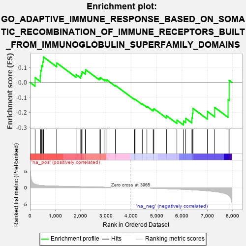
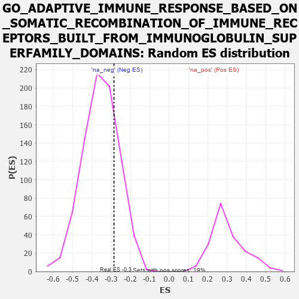

| | | Dataset | 7d |
| Phenotype | NoPhenotypeAvailable |
| Upregulated in class | na_neg |
| GeneSet | GO_ADAPTIVE_IMMUNE_RESPONSE_BASED_ON_SOMATIC_RECOMBINATION_OF_IMMUNE_RECEPTORS_BUILT_FROM_IMMUNOGLOBULIN_SUPERFAMILY_DOMAINS |
| Enrichment Score (ES) | -0.28538153 |
| Normalized Enrichment Score (NES) | -0.803392 |
| Nominal p-value | 0.76790124 |
| FDR q-value | 0.99091613 |
| FWER p-Value | 1.0 |
Table: GSEA Results Summary

Fig 1: Enrichment plot: GO_ADAPTIVE_IMMUNE_RESPONSE_BASED_ON_SOMATIC_RECOMBINATION_OF_IMMUNE_RECEPTORS_BUILT_FROM_IMMUNOGLOBULIN_SUPERFAMILY_DOMAINS
Profile of the Running ES Score & Positions of GeneSet Members on the Rank Ordered List
| PROBE | GENE SYMBOL | GENE_TITLE | RANK IN GENE LIST | RANK METRIC SCORE | RUNNING ES | CORE ENRICHMENT | | 1 | BCL3 | | | 202 | 1.047 | 0.0317 | No |
| 2 | NBN | | | 405 | 0.696 | 0.0443 | No |
| 3 | MLH1 | | | 423 | 0.679 | 0.0792 | No |
| 4 | ERCC1 | | | 453 | 0.660 | 0.1116 | No |
| 5 | THOC1 | | | 507 | 0.627 | 0.1392 | No |
| 6 | PKN1 | | | 535 | 0.619 | 0.1696 | No |
| 7 | MEF2C | | | 1054 | 0.473 | 0.1302 | No |
| 8 | MSH2 | | | 1819 | 0.334 | 0.0521 | No |
| 9 | EXO1 | | | 2002 | 0.304 | 0.0458 | No |
| 10 | HMCES | | | 2036 | 0.300 | 0.0580 | No |
| 11 | IRF4 | | | 2054 | 0.298 | 0.0721 | No |
| 12 | C1QBP | | | 2189 | 0.278 | 0.0704 | No |
| 13 | ATAD5 | | | 2197 | 0.277 | 0.0847 | No |
| 14 | RORA | | | 2730 | 0.193 | 0.0282 | No |
| 15 | NSD2 | | | 2784 | 0.185 | 0.0316 | No |
| 16 | BTK | | | 2958 | 0.156 | 0.0184 | No |
| 17 | LEF1 | | | 3037 | 0.144 | 0.0164 | No |
| 18 | SMAD7 | | | 3369 | 0.093 | -0.0202 | No |
| 19 | MTOR | | | 4114 | -0.025 | -0.1126 | No |
| 20 | MSH6 | | | 4129 | -0.028 | -0.1128 | No |
| 21 | STX7 | | | 4147 | -0.033 | -0.1131 | No |
| 22 | GCNT3 | | | 4432 | -0.082 | -0.1444 | No |
| 23 | GATA3 | | | 4614 | -0.120 | -0.1607 | No |
| 24 | DLG1 | | | 4860 | -0.169 | -0.1823 | No |
| 25 | CLU | | | 4889 | -0.174 | -0.1763 | No |
| 26 | FZD5 | | | 5386 | -0.292 | -0.2228 | No |
| 27 | ADA | | | 5798 | -0.405 | -0.2525 | No |
| 28 | JAG1 | | | 6060 | -0.494 | -0.2584 | Yes |
| 29 | RNF8 | | | 6147 | -0.518 | -0.2409 | Yes |
| 30 | TRPM4 | | | 6390 | -0.612 | -0.2380 | Yes |
| 31 | MBL2 | | | 6411 | -0.623 | -0.2065 | Yes |
| 32 | MALT1 | | | 6432 | -0.634 | -0.1744 | Yes |
| 33 | CCR2 | | | 7003 | -0.939 | -0.1950 | Yes |
| 34 | PARP3 | | | 7289 | -1.158 | -0.1676 | Yes |
| 35 | TRAF6 | | | 7818 | -2.157 | -0.1164 | Yes |
| 36 | TRAF2 | | | 7861 | -2.481 | 0.0139 | Yes |
Table: GSEA details [plain text format]

Fig 2: GO_ADAPTIVE_IMMUNE_RESPONSE_BASED_ON_SOMATIC_RECOMBINATION_OF_IMMUNE_RECEPTORS_BUILT_FROM_IMMUNOGLOBULIN_SUPERFAMILY_DOMAINS: Random ES distribution
Gene set null distribution of ES for GO_ADAPTIVE_IMMUNE_RESPONSE_BASED_ON_SOMATIC_RECOMBINATION_OF_IMMUNE_RECEPTORS_BUILT_FROM_IMMUNOGLOBULIN_SUPERFAMILY_DOMAINS